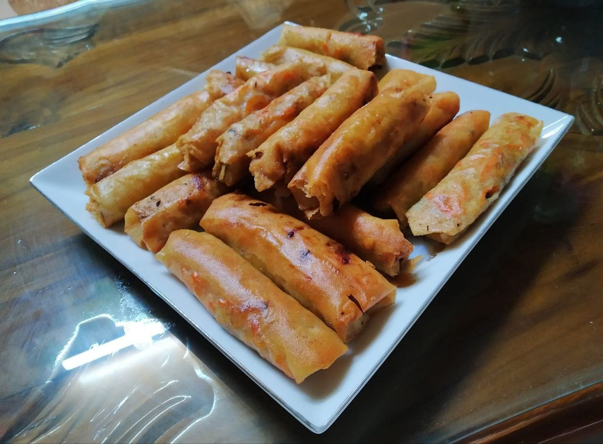

Spring Rolls
Crispy, golden, and filled with fresh vegetables or chicken — Spring Rolls are a perfect appetizer or snack. Serve with sweet chili sauce or soy sauce for a delicious treat.
Ingredients
- 10 spring roll wrappers
- 1 cup cabbage (shredded)
- ½ cup carrot (julienned)
- ½ cup bell peppers (thinly sliced)
- 100g cooked chicken (optional, shredded)
- 2 cloves garlic (minced)
- 1 tbsp soy sauce
- ½ tsp black pepper
- 1 tsp sesame oil
- Oil for deep frying
- Sweet chili sauce for serving
Instructions
- Prepare filling: Heat sesame oil in a pan. Sauté garlic, then add cabbage, carrots, bell peppers, and cooked chicken if using. Stir-fry for 3-4 minutes. Add soy sauce and pepper. Let the mixture cool.
- Assemble spring rolls: Place a wrapper on a flat surface. Spoon 2-3 tbsp of filling near the edge. Fold sides and roll tightly. Seal the edge with a little water.
- Fry: Heat oil in a deep frying pan. Fry spring rolls in batches on medium heat until golden brown and crispy. Drain on paper towels.
- Serve: Serve hot with sweet chili sauce or soy sauce.
Tip: You can also bake or air-fry spring rolls for a healthier version. Add mushrooms or tofu for a vegetarian option. 🥢